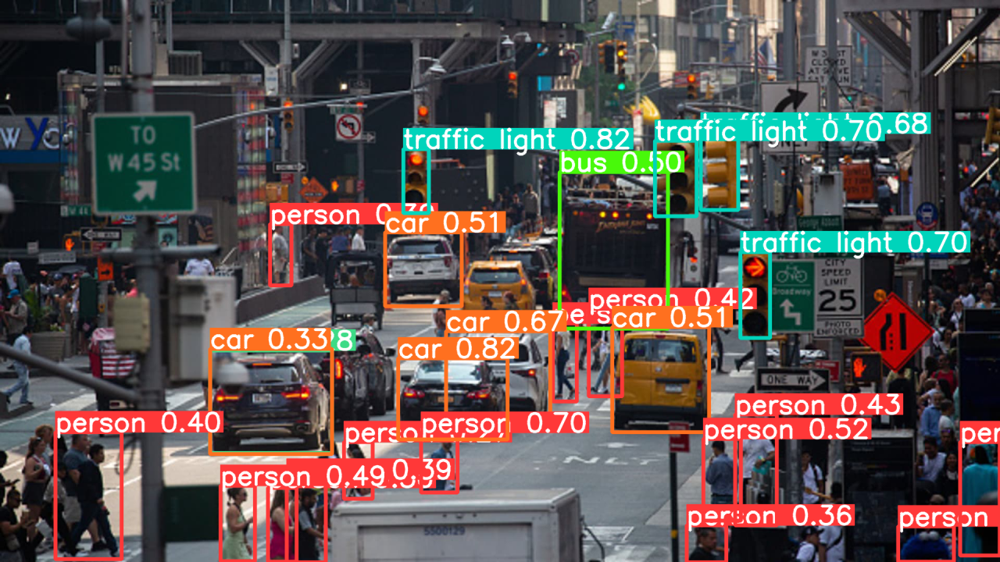
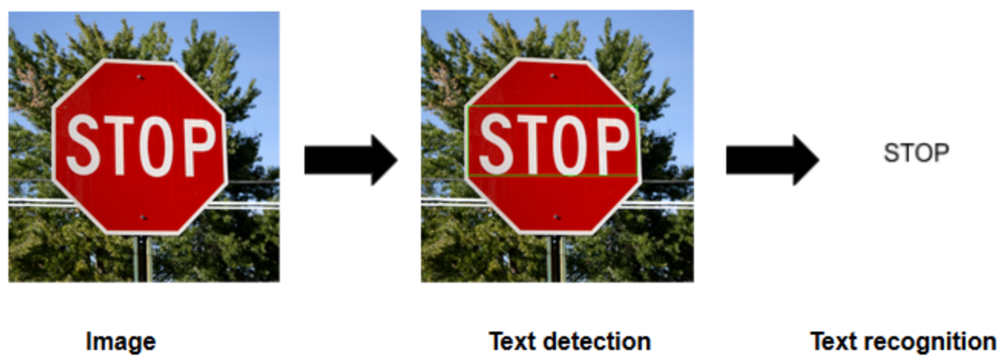
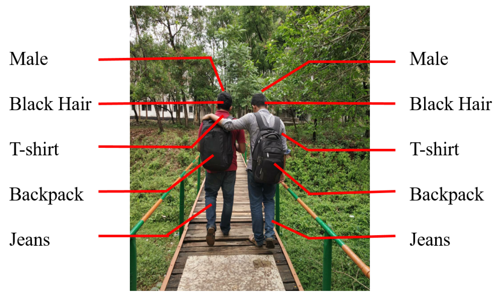
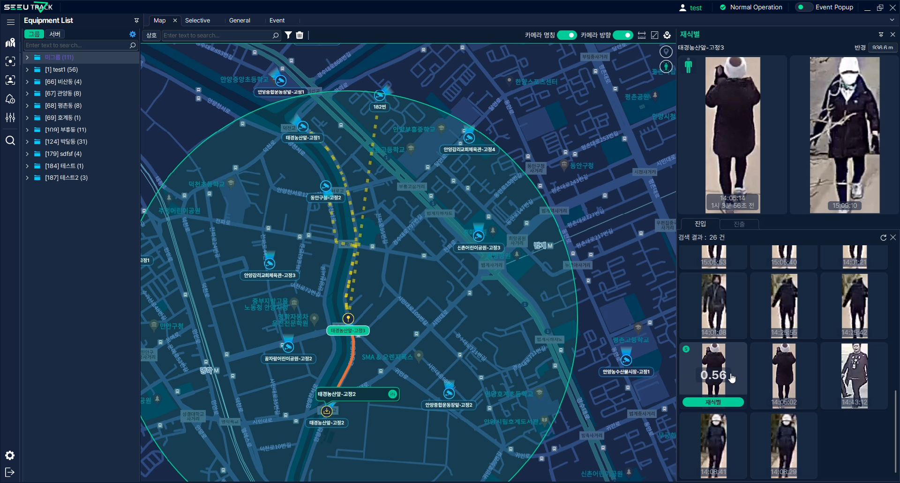
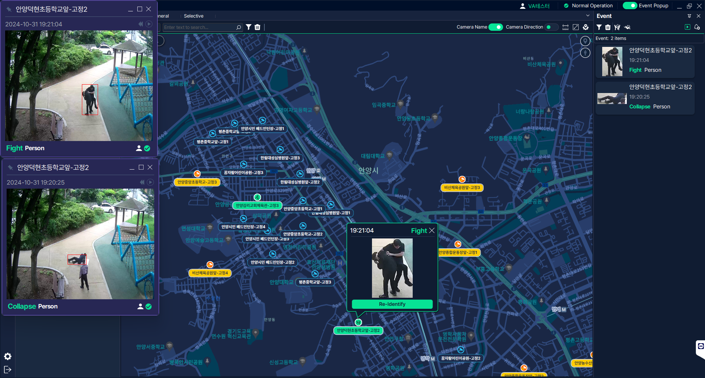
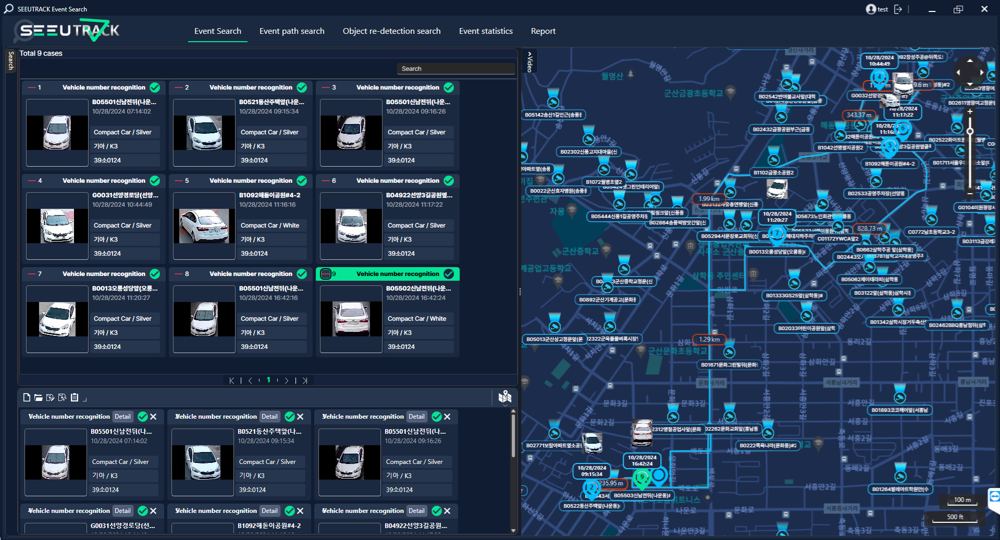
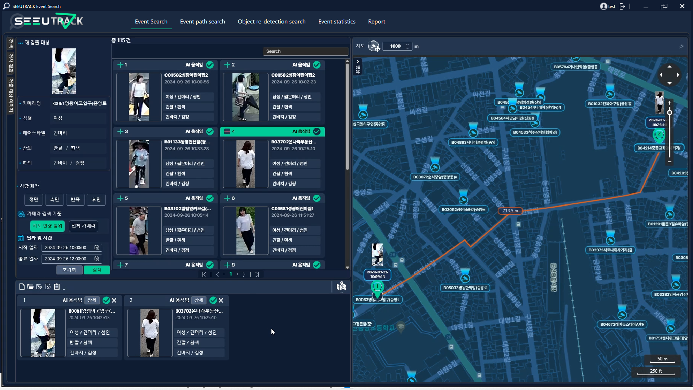

In this porject, We develop AI model for AI CCTV system which is called
SeeU track. For this project, the system is mainly focus on the re-identification
task for vehicle and person. For Vehicle re-identification,
we employed object detection model for detecting vehicle and its license plate, classification model
to recognize the vehicle's brand, model, and color, and text detection and text
recognition model (OCR) to read the license plate. Besides, for person re-identification, we applied
object detection model to detect person and person attribute recognition model to
recognize the person's attribute in terms of gender, age, type and color of cloth, etc.

1. Person, Vehicle, License plate detection with Object Detection Model
We exploit Object Detection model to detect person, vehicle, and its license plate to detect
the target accurately. To select the most decent model in the desired environment,
we searched and tested the open source model, and decide to use YOLOv11 model.

2. Vehicle recognition with Object Classification Model
We use Object Classification model to extract the MMC (maker, model, color) Information
of the vehicle. For this task, many open source models are tested and YOLOv11 model
is chosen since it has a higher accuracy than others.

3. License Plate Recognition
OCR model is used for this task. OCR model is consist of text detection and recognition.
We tested and evaluated models and dbnet and svtr models are chosen.

4. Person Attribute Recognition
Person Attribute Recongition is the task to extract the information of the
person including gender, age, type and color of cloth, accessory, etc. To develop
the model, we tried different architectures to extract the feature information such as
Resnet, vision transformers (ex. swin transformer), and etc. After many test, we
decide to employ vision language model for extraction and transformer
for classification task.




(PS) During the model development, we tested many scheme such as changing the architecutre,
modifing number of layers, activation function, loss function, and etc to
improve the performance.